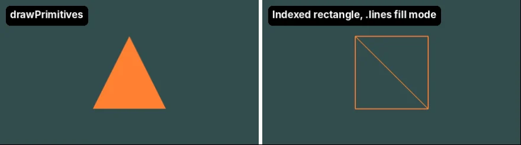

Getting Started
Hello Triangle#
examples/Sources/02-HelloTriangle, run with swift run HelloTriangle. Download all examples or see how to run them.In Metal, as in every GPU API, everything you see is made of triangles. Drawing the first one requires three new pieces: vertex data in a buffer, a pair of shaders, and a render pipeline state that ties them together. It is the steepest step in the whole series. Once it works, the rest is variation.
The graphics pipeline#
The pipeline is the sequence of steps that turns 3D coordinates into colored pixels.
- The vertex function runs once per vertex and outputs its final position.
- The GPU assembles vertices into triangles and rasterizes them: it works out which pixels each triangle covers and produces a fragment for each one.
- The fragment function runs once per fragment and outputs its color.
- Depth and stencil tests and blending decide how that color ends up in the texture.
Vertex data#
Metal expects final positions in normalized device coordinates (NDC): x and y run from -1 to 1 across the view, with x to the right and y up, and z runs from 0 to 1 into the screen. Anything outside is clipped away. A triangle in the middle of the view:
let vertices: [Float] = [
-0.5, -0.5, 0.0, // bottom left
0.5, -0.5, 0.0, // bottom right
0.0, 0.5, 0.0, // top
]
The GPU cannot read a Swift array. The data has to be in an MTLBuffer. Add a property and create the buffer in init:
let vertexBuffer: MTLBuffer
// in init, before super.init()
vertexBuffer = device.makeBuffer(bytes: vertices,
length: MemoryLayout<Float>.stride * vertices.count,
options: [])!
The buffer is just bytes. Metal does not know yet that they are groups of three floats.
The shaders#
Open Shaders.metal and write the two functions:
#include <metal_stdlib>
using namespace metal;
struct VertexIn {
float3 position [[attribute(0)]];
};
struct VertexOut {
float4 position [[position]];
};
vertex VertexOut vertex_main(VertexIn in [[stage_in]]) {
VertexOut out;
out.position = float4(in.position, 1.0);
return out;
}
fragment float4 fragment_main(VertexOut in [[stage_in]]) {
return float4(1.0, 0.5, 0.2, 1.0);
}
The double-bracket annotations are how MSL connects shader variables to the outside world:
vertexandfragmentmark the functions as pipeline entry points.[[stage_in]]means "the per-vertex (or per-fragment) input assembled for this stage".[[attribute(0)]]says this member comes from vertex attribute 0, which we describe below.[[position]]marks the output that holds the clip-space position. It is afloat4; the fourth componentwis 1 for now and becomes important with perspective.
The fragment function returns an orange color as RGBA floats.
The vertex descriptor#
An MTLVertexDescriptor explains the layout of the vertex buffer so that Metal can fill VertexIn:
let vertexDescriptor = MTLVertexDescriptor()
vertexDescriptor.attributes[0].format = .float3
vertexDescriptor.attributes[0].offset = 0
vertexDescriptor.attributes[0].bufferIndex = 0
vertexDescriptor.layouts[0].stride = MemoryLayout<Float>.stride * 3
Attribute 0 is three floats, starting at byte 0 of each vertex, read from the buffer bound at index 0. Each vertex is 12 bytes apart.
The render pipeline state#
The pipeline state combines the shader functions, the vertex layout, and the pixel format of the texture being drawn into:
let pipelineState: MTLRenderPipelineState
// in init, before super.init()
let library = device.makeDefaultLibrary()!
let pipelineDescriptor = MTLRenderPipelineDescriptor()
pipelineDescriptor.vertexFunction = library.makeFunction(name: "vertex_main")
pipelineDescriptor.fragmentFunction = library.makeFunction(name: "fragment_main")
pipelineDescriptor.vertexDescriptor = vertexDescriptor
pipelineDescriptor.colorAttachments[0].pixelFormat = .bgra8Unorm
do {
pipelineState = try device.makeRenderPipelineState(descriptor: pipelineDescriptor)
} catch {
fatalError("Could not create pipeline state: \(error)")
}
makeDefaultLibrary() loads the compiled shaders from the app bundle. Creating a pipeline state compiles the shaders for the GPU and is slow, so always do it at load time and never per frame. The pixel format must match the view's colorPixelFormat; a mismatch is the most common first validation error.
Coming from OpenGL
A pipeline state is roughly a linked shader program, plus the VAO's attribute layout, plus blend state, all frozen into one object. There is no VAO or VBO binding dance.
Draw#
In draw(in:), between creating the encoder and ending it:
encoder.setRenderPipelineState(pipelineState)
encoder.setVertexBuffer(vertexBuffer, offset: 0, index: 0)
encoder.drawPrimitives(type: .triangle, vertexStart: 0, vertexCount: 3)
index: 0 is the buffer slot that the vertex descriptor's bufferIndex refers to. Run the app and you should see an orange triangle.
Indexed drawing#
A rectangle is two triangles that share two vertices. Instead of duplicating them, store each vertex once and describe the triangles with indices:
let vertices: [Float] = [
0.5, 0.5, 0.0, // top right
0.5, -0.5, 0.0, // bottom right
-0.5, -0.5, 0.0, // bottom left
-0.5, 0.5, 0.0, // top left
]
let indices: [UInt16] = [
0, 1, 3,
1, 2, 3,
]
indexBuffer = device.makeBuffer(bytes: indices,
length: MemoryLayout<UInt16>.stride * indices.count,
options: [])!
encoder.drawIndexedPrimitives(type: .triangle,
indexCount: indices.count,
indexType: .uint16,
indexBuffer: indexBuffer,
indexBufferOffset: 0)
To see the triangles themselves, call encoder.setTriangleFillMode(.lines) before drawing.

Exercises#
- Draw two triangles next to each other by adding three more vertices and changing
vertexCount. - Create a second pipeline state with a fragment function that returns yellow, and draw the second triangle with it.
- Move a vertex outside the -1 to 1 range and watch it get clipped.